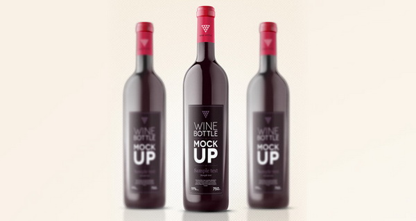

Mockup là gì? Sử dụng thế nào?
Wiki.designs.vn - Bạn đã từng bắt gặp thuật ngữ Mockup nhưng lại không biết nó là gì hay sử dụng như thế nào? Hãy cùng Designs.vn đi tìm câu trả lời ngay nhé !
Mockup là gì?
Một cách hiểu đơn giản thì mockup (hay mock-up) là một mô hình ví dụ cho đối tượng hoặc thiết bị được tạo ra dựa trên một thiết kế cụ thể theo tỉ lệ hoặc kích thước đầy đủ. Mockup mang tính nguyên mẫu, nó cung cấp ít nhất một phần chức năng của hệ thống và cho phép thử nghiệm thiết kế. Thông thường, Mockup được xây dựng để truyền đạt ý tưởng chung trên các sản phẩm thực tế, sử dụng bởi các nhà thiết kế chủ yếu để có được thông tin phản hồi từ người dùng. Mockup cung cấp phương pháp hữu hiệu tiết kiệm nhiều thời gian và tiền bạc trong việc thử nghiệm thiết kế, có nghĩa là, bạn hoàn toàn có thể tìm thấy điểm không đúng trên thiết kế, sửa chữa, thay đổi nó dễ dàng.

Mẫu mockup nhãn sản phẩm.
Mockup phổ biến được biết đến trong thiết kế đồ họa như là khuôn mẫu sản phẩm có sẵn để gắn bản thiết kế là các file PSD hay vector miễn phí hoặc tính phí: logo, card, bộ nhận diện thương hiệu, website…Bên cạnh đó, thuật ngữ mockup cũng được sử dụng để chỉ các mô hình mẫu kĩ thuật sơ bộ dự án, thiết kế mới trước khi đưa vào sản xuất trong thiết kế nội thất và thiết kế công nghiệp.
http://designs.vn/tin-tuc/mockup-la-gi-su-dung-the-nao-_14011.html#.X30YI2j7SHs